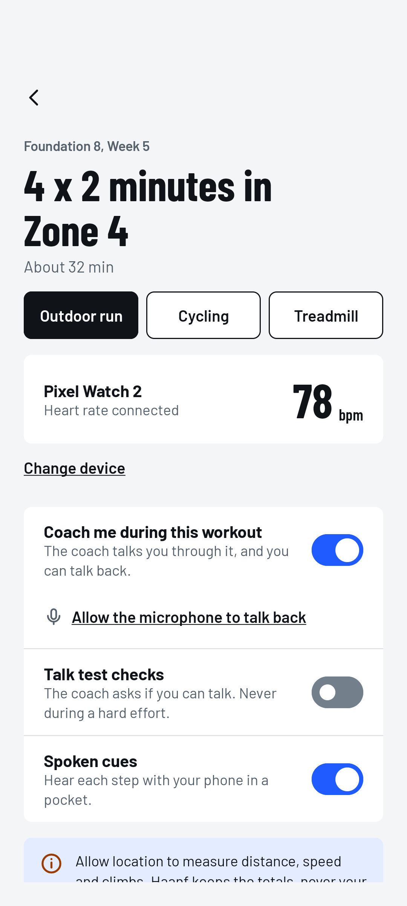
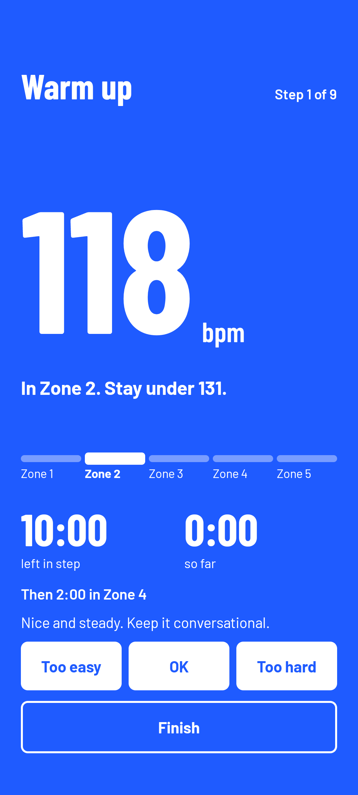
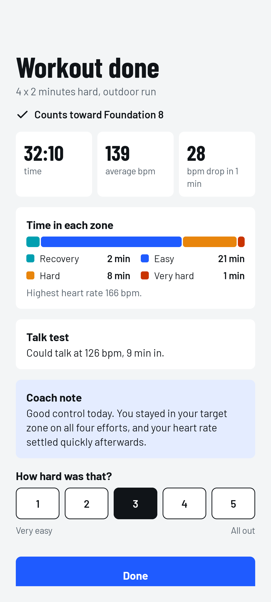
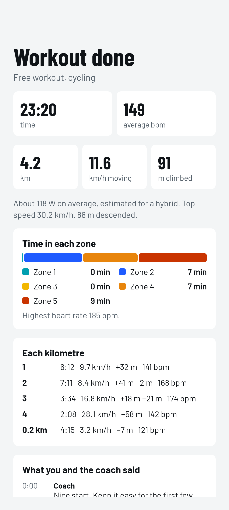

Build endurance you can feel.
Haanf is an Android app that reads your heart rate live from your watch, runs a research-backed training program, and coaches you through each session by voice. Everything stays on your phone.
A session, start to finish
Tell the coach how much time you have and how you feel. It plans the workout, checks it against your safety rules, and talks you through it with the phone in your pocket.
Before you start



During



After



A coach with rules it can't break
The coach runs in the background during a workout. It wakes when it chooses, reads your heart rate, pace and climb, and speaks a short cue. Any change it wants goes through a separate rule check with no AI in it.
- At most two hard sessions in any seven days.
- Hard means Zone 3 and above, with a warm-up and a cool-down around it.
- No hard work on a day you feel rough, or next to a hard program session.
- No Zone 5 until 12 workouts are logged, and never more than 4 minutes at a time.
- Harder only after you ask. The program itself never changes.
| 0:00 | Coach | Nice start. Keep it easy for the first few minutes. |
| 4:10 | You | Big hill coming up. |
| 4:22 | Coach | Shift down early and let your speed drop on the climb. |
| 12:00 | Coach | You're in Zone 4 now. Ease off if you want this steady. |
| 17:05 | You | Can we go a bit longer? |
| 17:06 | Rule check | Approved five more easy minutes at the end. |
| 21:00 | Talk test | Could talk comfortably. |
How it's built
Kotlin and Jetpack Compose, one process and no server. Each boundary keeps one concern in one place, so a new watch or a new AI provider is a new class rather than a rewrite.
- 372 tests
- 313 run on the JVM and 59 on a device, from zone edges to whole workouts against a simulated strap.
- 8 database versions
- Every Room migration has a test. One recounts each saved workout's zones from its raw heart rate.
- Simulated watches
- Python peripherals built on Bumble drive the real Bluetooth code on the emulator, failures included.
- One boundary per device
HeartRateSourceis all the workout logic knows about a wearable.- Rules in plain Kotlin
- Zones, plans, safety and terrain have no Android types, so they run and test on the JVM.
- Built on real hardware
- Live heart rate and Health Connect were proven on a Pixel 6 with a Pixel Watch 2.
What stays on your phone
Everything, unless you send it.
- There's no account and no server. Your workouts live in a database on the phone.
- Data leaves only when you tap export, or goes to the AI provider you chose, on your own key.
- Your key is encrypted with the Android Keystore, and backups are off.
- Health Connect is read only. A test fails the build if a write permission appears.
- GPS measures distance and speed. No route or position is ever saved.
- The coach never receives audio, location or device details.